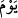

“O günde azap, onları hem üstlerinden hem ayaklarının altından saracak”
“ ” kelimesi, o günün dehşetini ifâde için zikredilmeyen gizli bir fiile âid bir zarftır.
Yani, cehennem ateşi, etrafı çepeçevre sarmasıyla yukarıda işâret edilen azâb; onları
örter ve üzerlerinde yükselir. Artık söz ve kelimelerle ifâde edilemeyen korkunç ve
dehşetli haller olur.
Allah Teâlâ veya meleklerden bazısı Allah’ın emriyle onlara derler ki:
“Yaptıklarınızı (cezâsını) tadın!” Yâni bu, dünyada gelmesi için acele ettiğiniz azâb da
dâhil işlemekte ısrar ettiğiniz kötülüklerinizin cezâsı ve karşılığıdır; şimdi tadın...
“Zevk”, ağızla yemeği almaktır. Asıl olarak ağız ile alınan az bir şey için kullanılır.
Yenilen şey çok olunca, buna “ekl” yâni yemek yemek denilir. Kur’ân’da azâb için de
zevk kelimesi tercih edilmiştir. Çünkü zevk kelimesi her ne kadar örfte az yenilen
(tadılan) birşey için kullanılırsa da çokluk için kullanılmaya da elverişlidir. Kur’ân-ı
Kerim’de özellikle bu kelimenin zikredilişi, iki mânâya da geldiğinin bilinmesi içindir.
Nitekim el-Müfredât’da bu şekilde kaydedilmiştir.
Kâşîfî der ki: Dünya amel yeri, âhiret ise cezâ/karşılık yeridir. Burada ne ekerlerse
orada onu biçerler.
Sen öyle bir tohum saç ki biçtiğinde
Mahsûlünü alınca mutlu ve sevinçli olasın
et-Te’vîlâtü’n-Necmiyye’de der ki: “Senden azâbı çarçabuk (getirmeni) istiyorlar”
âyeti, ehli için azâbı acele istemeye işâret eder. Azâb ehli, kâfirin nefsidir. Zira onu
çağırmaya ve celbetmeye (istid‘â), ihtiyaç yoktur. Çünkü hırs, aç gözlülük, şehvet, kibir,
hased, gazab ve kin cehennemi, kâfir nefisleri kuşatmıştır.
“O günde azap, onları” kibir, gazab, hased ve kin ile üstlerinden” hırs, aç gözlülük
ve şehvet ile de “ayaklarının altından” çepeçevre “saracak.” Fakat onlar gaflet
uykusunda oldukları için bu azâbın tadından habersizdirler. Bu, tıpkı uykuda olup da
şuûru olmayan kimsenin bedeninde (sûret) cereyan eden şeyden habersiz oluşuna
benzer. Zira onun sûreti uyumaktadır ve ancak sûretinde ve bedeninde meydana gelen
azâbın tadını uykudan uyanınca hisseder. Ve Allah Teâlâ kıyâmet gününde der ki:
“Yaptıklarınızı” yâni halk ve Hâlik’la ilgili işlediklerinizin cezâsını tadın!”
diyecektir.” Allah Teâlâ’nın şu kavli de bu te’vîli teyîd eder: “Kötüler de” şuurları
olmadığı halde o vakitte “cehennemdedirler. Cezâ gününde oraya girerler. Onlar
(kâfirler) oradan bir daha da ayrılmazlar. Ancak şuurları olmadığı için bunu
farketmezler.” (el-İnfitâr, 82/14-16). Kime, kalb doğusundan hidâyet ve inâyet güneşi
doğarsa, din (cezâ) gecesinden din (cezâ) gündüzüne çıkar. Beşeriyet arzı, Rabbinin
nûruyla aydınlanır; nefsini cehennem ahlâkı ve huylarıyla kuşatılmış görür. Onun
acısının tadını duyar ve bundan çıkmaya ve kurtulmaya çalışır. Çünkü, az sonra âyette
de ifâde edileceği gibi, Allah’ın arzı geniştir. Allah Teâlâ’dan kurtuluş isteriz.